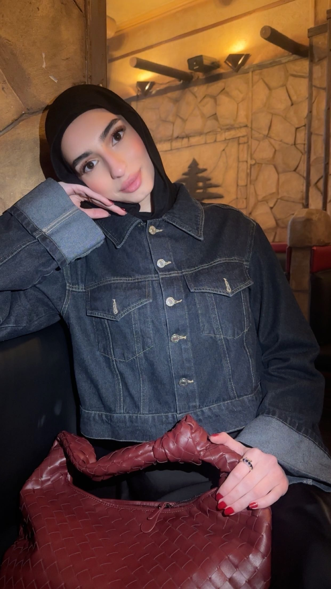

Velkommen til min portfolio
Mit navn er Leen, og jeg studerer IT-arkitektur på Erhvervsakademi København.
På min portfolio vil jeg vise mine projekter, min udvikling og det, jeg lærer under min uddannelse.
Om mig

Jeg hedder Leen og kommer oprindeligt fra Syrien. Jeg kom til Danmark i 2017 og har siden boet i Nykøbing Falster.
Jeg gik på Nykøbing Katedralskole, hvor jeg havde studieretningen bioteknologi. I dag studerer jeg IT-arkitektur på Erhvervsakademi København.
Jeg elsker at være sammen med min familie og gå ture i naturen. Jeg interesserer mig også meget for hårpleje, hudpleje, makeup og parfumer.
Jeg har længe drømt om at arbejde med content creation, fordi jeg godt kan lide at være kreativ og arbejde med digitale medier.
Uddannelse
- Nykøbing Katedralskole - Bioteknologi
- Erhvervsakademi København - IT-arkitektur
Arbejdserfaring
- Elgiganten - Ungarbejder
- Nyform - Nuværende arbejde
Mine projekter
Her kan du se de projekter, jeg arbejder med under min uddannelse. Jeg vil løbende tilføje nye projekter.
Portfolio hjemmeside
Min personlige portfolio, som jeg har lavet med HTML og CSS.
Webteknologi projekt
Her kommer et kommende projekt fra min undervisning i webteknologi.
Kommende projekter
Her vil jeg tilføje flere projekter, efterhånden som jeg laver dem.